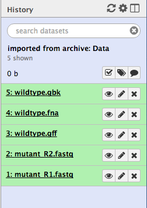

Dataset
Import a Galaxy history
Copy this link:
https://swift.rc.nectar.org.au:8888/v1/AUTH_377/public/Microbial_tutorials/Galaxy_history_input_files.tar.gz
- Go to your Galaxy instance. Make sure you are registered and logged in. Refresh the page.
- Click on the
History cog
- Select
Import from File
- In the box called
Archived History URL , paste in the link address to the Galaxy history (that you copied above). - Click
Submit - Wait a few seconds.
- Click on the
view all histories button
- See if the Galaxy history has been imported: it will be called
imported from archive: Data - Above that pane, click on the
Switch to button. - Then click
Done (in the top left corner). - You should now have a list of five files in your current history. We will use these for the Genomics Workshop; or see below for additional files.

Additional Galaxy histories
If you are using only part of the Genomics Workshop, you can upload any required histories listed here. Follow the instructions above.
Galaxy history: FastQC
https://swift.rc.nectar.org.au:8888/v1/AUTH_377/public/Microbial_tutorials/FastQChistory.tar.gz
Galaxy history: Spades
https://swift.rc.nectar.org.au:8888/v1/AUTH_377/public/Microbial_tutorials/Spadeshistory.tar.gz
Galaxy history: Prokka
https://swift.rc.nectar.org.au:8888/v1/AUTH_377/public/Microbial_tutorials/Prokkahistory.tar.gz
Galaxy history: Snippy
https://swift.rc.nectar.org.au:8888/v1/AUTH_377/public/Microbial_tutorials/Snippyhistory.tar.gz
Galaxy history: Workflows
https://swift.rc.nectar.org.au:8888/v1/AUTH_377/public/Microbial_tutorials/Galaxy-History-Workflows-history.tar.gz
Additional files
If you need individual files, you can upload any of the files listed here. The instructions are listed below.
Wildtype reference
- wildtype.fna
https://swift.rc.nectar.org.au:8888/v1/AUTH_377/public/Microbial_tutorials/wildtype.fna
- wildtype.gbk
https://swift.rc.nectar.org.au:8888/v1/AUTH_377/public/Microbial_tutorials/wildtype.gbk
- wildtype.gff
https://swift.rc.nectar.org.au:8888/v1/AUTH_377/public/Microbial_tutorials/wildtype.gff
Mutant Illumina sequence
- mutant_R1.fastq.gz
https://swift.rc.nectar.org.au:8888/v1/AUTH_377/public/Microbial_tutorials/mutant_R1.fastq.gz
- mutant_R2.fastq.gz
https://swift.rc.nectar.org.au:8888/v1/AUTH_377/public/Microbial_tutorials/mutant_R2.fastq.gz
Assembled contigs
- SPAdes_contigs.fasta
https://swift.rc.nectar.org.au:8888/v1/AUTH_377/public/Microbial_tutorials/SPAdes_contigs.fasta
Upload to Galaxy
There are two ways to upload these files to Galaxy. You can either download to your local computer and upload to Galaxy, or you can tell Galaxy to directly upload the file from an external source.
Download and upload:
- Download required file(s) to your computer.
- From the Galaxy tool panel, click on
Get Data → Upload File - Click the
Choose local file button - Find and select the
file you downloaded and clickOpen - Set the
Type correctly. - Click the
Start button. - Once the progress bar reaches 100%, click the
Close button - The file will now upload to your current history.
Or, tell Galaxy to find the file from an external source:
- From the Galaxy tool panel, click on
Get Data → Upload File - Click the
Paste/Fetch data button - Paste the URL into the box.
- Click the
Start button. - Once the progress bar reaches 100%, click the
Close button - The file will now upload to your current history.